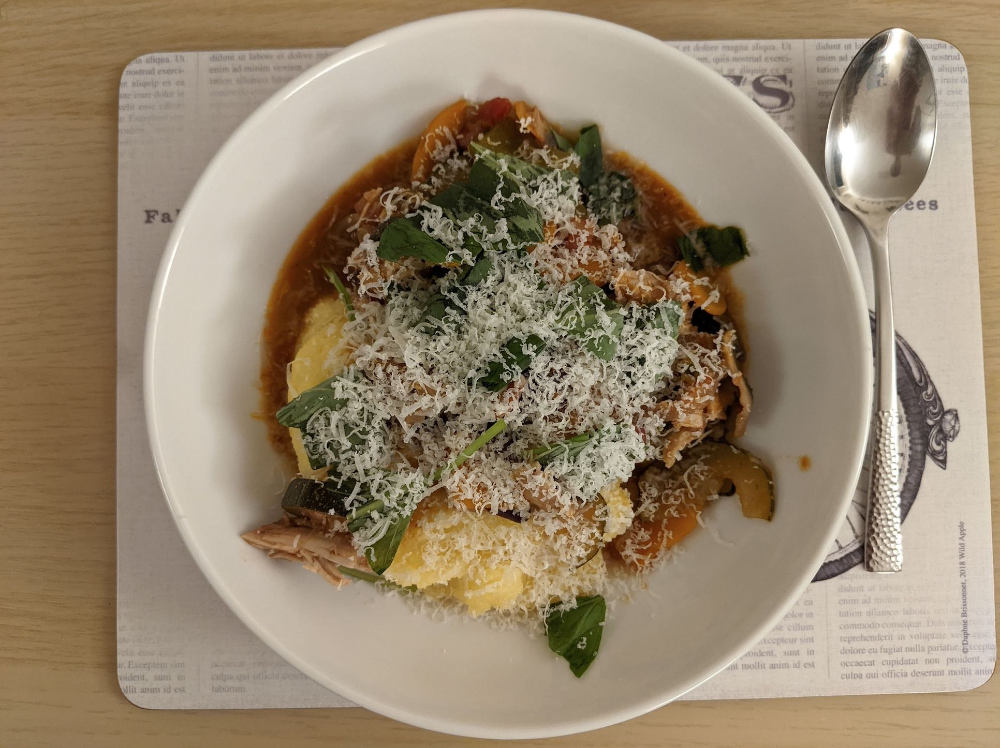

Chicken cacciatore
Mmmmm...

Ingredients
- 1 pack of bacon
- 500-600g chicken breasts
- Salt and pepper
- Small glass of red wine (or chicken stock)
- 300-400g mushrooms, sliced
- 2 diced peppers, try different colours
- 1 carrot, diced
- 1 onion, thickly sliced
- 6 garlic cloves
- 1 can chopped tomatoes
- A handful of pitted olives
- 1 tsp dried oregano
- ½ tsp crushed chilli flakes
- Small bunch of chopped basil
- Parmigiano for sprinkles
Instructions
- Chop and fry up the bacon, then transfer to a separate bowl.
-
Season the chicken breasts and fry them for about 3 minutes per side, allowing to brown
slightly.
- Add in the wine, and use it to scrape away at any brown bits left by the frying.
- Now add all of the other ingredients, along with the bacon that was set aside.
-
Allow the mixture to reach simmering point, before turning it down to simmer for about 25
minutes.
-
Remove the chicken breasts, and shred them with two forks before plopping the pieces back into
the pot.
- Serve with polenta (or rice) and a sprinkling of that fresh basil and parmigiano.
Serves 6-8.
Inspired by this
recipe.